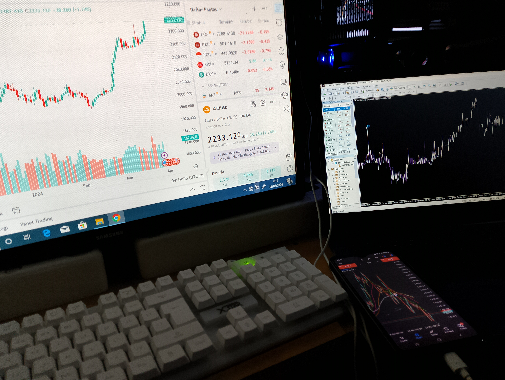

Firman Hidayat
Saya sendiri telah memulai trading sejak tahun 2024 atau ketika saya berusia 22 tahun. lokasi tinggal terkini di Bandung, tetapi saya sering berpergian ke luar kota. maka dari itu dm saya jika ingin bertemu secara langsung.

Tempat Saya Belajar
S2FX community
- 2024 s/d 2025
Nusantara Teredukasi
- 2024 s/d sekarang
Trader Family
- 2025 s/d sekarang

Youtube Channels Terbaik
Rizki Aditama
- 2024 s/d sekarang
Forex Sarjana
- 2025 s/d sekarang
Akademi Crypto
- 2025 s/d sekarang

𝐋𝐈𝐒𝐓 𝐌𝐄𝐍𝐔 Pembelajaran untuk pemula dari S2FX Community
TAHAP PERTAMA -------------------------------------------------------- BROKER -------------------------------------------------------- METODE SNR -------------------------------------------------------- SARAN UNTUK PEMULA -------------------------------------------------------- NEXTSTEP UNTUK PEMULA -------------------------------------------------------- REKOMENDASI BUKU -------------------------------------------------------- MASALAH PSIKOLOGI -------------------------------------------------------- PENYAKIT TRADER -------------------------------------------------------- MATERI BASIC -------------------------------------------------------- TIPS MONEY MANAGEMENT -------------------------------------------------------- ALASAN GAGAL JADI TRADER -------------------------------------------------------- MODAL UNTUK TRADING -------------------------------------------------------- JAM SESI KILLZONE -------------------------------------------------------- BELAJAR CRYPTO -------------------------------------------------------- TAMPARAN PEMALAS --------------------------------------------------------